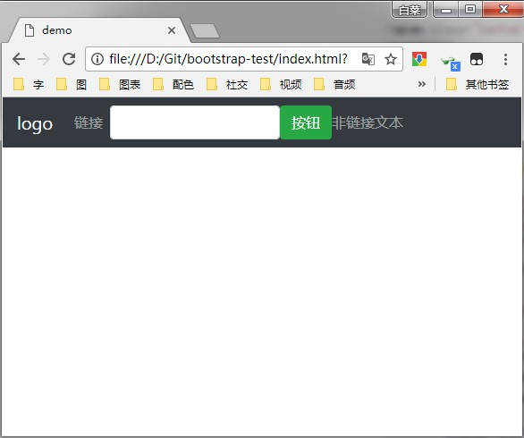

bootstrap
定义
Bootstrap 是一组用于网站和网络应用程序开发的开源前端框架（HTML、CSS、Javascript）。旨在使动态网页和Web应用的开发更加容易[1]。
Bootstrap 可应用于响应式布局开发、移动设备优先的 Web 项目。

下载与引入
- 下载（任选一种）
- Bootstrap 官网：https://getbootstrap.com/
- 国内 CDN：https://www.staticfile.org/
- npm：npm install bootstrap
- gem：gem 'bootstrap', '~> 4.0.0'
- 引入（jquery.js 需在 bootstrap.js 前面）
- 核心 CSS 文件：<link rel="stylesheet" href="bootstrap.min.css">
- jquery 文件：<script src="jquery.min.js"></script>
- 弹窗、提示、下拉菜单组件：<script src="popper.min.js"></script>
- 核心 javascript 文件：<script src="bootstrap.min.js"></script>
容器
bootstrap 提供了两个容器类：
- container
- container-fluid
container-fluid 使元素宽度始终等于浏览器视窗（viewport）宽度。
<body>
<div class="container" style="
background-color: #bbb;
height: 100px;
">container</div>
<div class="container-fluid" style="
background-color: #eee;
height: 100px;
">container-fluid</div>
</body>
bootstrap.css 部分源码：
.container {
width: 100%;
padding-right: 15px;
padding-left: 15px;
margin-right: auto;
margin-left: auto;
}
.container-fluid {
width: 100%;
padding-right: 15px;
padding-left: 15px;
margin-right: auto;
margin-left: auto;
}
网格布局
bootstrap 的网格布局将一行划分为十二列，一个元素可以根据要求占据多个列（每个元素左右外边距各为 15px ），同一列无法全部容纳时候，多余元素自动归入下一列。
bootstrap 提供了两种方式的网格布局方式：
<!-- 自适应方式 -->
<div class="row">
<div class="col">第一列</div>
<div class="col">第二列</div>
...
<div class="col">第n列</div>
</div>
<!-- 按权重方式 -->
<div class="row">
<div class="col-设备-所占列数"></div>
...
<div class="col-设备-所占列数"></div>
</div>
| 类名 | 描述 |
|---|---|
| col-所占列数 | 适用任何设备 |
| col-sm-所占列数 | 平板（父元素宽度 >= 576px） |
| col-md-所占列数 | 桌面显示器（父元素宽度 >= 768px） |
| col-lg-所占列数 | 大桌面显示器（父元素宽度 >= 992px） |
| col-xl-所占列数 | 超大桌面显示器（父元素宽度 >= 1200px） |

文字
bootstrap 对常用标签的样式进行了预设。
-
body
- 外边距为 0
- 颜色 #212529
- 字体：-apple-system, BlinkMacSystemFont, "Segoe UI", Roboto, "Helvetica Neue", Arial, sans-serif, "Apple Color Emoji", "Segoe UI Emoji", "Segoe UI Symbol"
-
p
- 上外边距为 0
- 下外边距为 1 rem
-
h1 ~ h6
- 上外边距为 0
- 下外边距为 0.5 rem
- 字体大小分别为 2.5 rem, 2 rem, 1.75 rem, 1.5 rem, 1.25 rem, 1 rem
-
为有 title 属性的 abbr 标签
- 点状下划线
- 悬浮时鼠标形状为 help
-
code
- 内边距为 0.2 rem 0.4 rem
- 字体大小为 90%
- 颜色为 #bd4147
- 背景颜色为 #f8f9fa
- 边缘圆角为 0.25 rem
-
kbd
- 内边距为 0.2 rem 0.4 rem
- 字体大小为 87.5%
- 颜色为 #fff(纯白)
- 背景颜色为 #212529
- 边缘圆角为 0.2 rem
p
h1
h2
h3
h4
h5
h6
abbrcodekbd
颜色
bootstrap 预设了一组前景色和背景色的类。
-
前景色（该类只预设了前景色，背景色需自行设置）
- text-muted/text-secondary #868e96 柔和文本/二级标题
- text-primary #007bff 重要文本
- text-success #28a745 执行成功
- text-info #17a2b8 信息提示文本
- text-warning #ffc107 警告文本
- text-danger #dc3545 危险操作文本
- text-white #fff 纯白色文本
- text-light #f8f9fa 浅灰色文本
- text-dark #343a40 深色文本
-
背景色（该类只预设了背景色，前景色需自行设置）
- bg-secondary #868e96 二级标题背景
- bg-primary #007bff 重要信息背景
- bg-success #28a745 执行成功背景
- bg-info #17a2b8 信息提示背景
- bg-warning #ffc107 警告背景
- bg-danger #dc3545 危险操作背景
- bg-white #fff 纯白色背景
- bg-light #f8f9fa 浅灰色背景
- bg-dark #343a40 深色背景
消息提示框
bootstrap 提供了一组预设消息提示框的类，完整用法如下（提示框颜色与背景色种类相同）：
<div class="alert alert-success alert-dismissable fade show">
关我之前请读这条<a class="alert-link" href="#">信息</a>
<button type="button" class="close" data-dismiss="alert">x</button>
</div>

表格
bootstrap 提供了一组表格样式的类。
-
整体（可叠加使用，添加在 table 标签上）
-
table（基本表格）
-
table-striped（条纹表格）
-
table-bordered（带边框表格）
-
table-dark（暗色表格）
-
table（基本表格）
-
悬浮特效（添加在 table 标签上）
-
table-hover
-
table-hover
-
表头颜色（添加在 th 标签上）
- table-dark（深色）
- table-light（浅色）
-
带颜色的行（添加在 tr 标签上）
- table-primary
- table-success
- table-danger
- table-info
- table-warning
- table-active
- table-secondary
- table-light
- table-dark
-
响应式表格：屏幕过小时底部自动增加一个滚动条（添加在父级标签上）
- table-responsive-sm（< 576 px）
- table-responsive-md（< 768 px）
- table-responsive-lg（< 992 px）
- table-responsive-xl（< 1200px）
按钮
bootstrap 提供了一组按钮类。
-
设置为按钮：
btn（基本按钮）+-
设置为纯色按钮：
- btn-primary
- btn-secondary
- btn-success
- btn-info
- btn-warning
- btn-danger
- btn-dark
- btn-light
- btn-link
-
设置为边框按钮：
- btn-outline-primary
- btn-outline-secondary
- btn-outline-success
- btn-outline-info
- btn-outline-warning
- btn-outline-danger
- btn-outline-dark
- btn-outline-light
- btn-outline-link
-
设置为纯色按钮：
-
设置按钮大小：
- btn-lg（大按钮）
- 不添加（默认）
- btn-sm（小按钮）
- 设置为块级按钮：btn-block
-
设置按钮状态：
- active（激活）
- disabled（禁用）
-
设置为按钮组（添加在父元素上）：btn-group
-
设置按钮组大小：
- btn-group-sm
- btn-group-lg
- btn-group-xs
-
设置按钮组方向：
- 不添加（默认水平）
- btn-group-vertical（垂直）
-
设置按钮组大小：
进度条
bootstrap 提供了一组设置进度条的类。
<!-- 模版 -->
<父标签 class="progress">
<进度条标签 class="progress-bar" style="width: 进度%">进度条内部标签</进度条标签>
</父标签>
<!-- 实例 -->
<div class="progress">
<div class="progress-bar" style="width: 50%">50%</div>
</div>
-
设置进度条颜色（添加在进度条标签上）：
- bg-success
- bg-info
- bg-warning
- bg-danger
-
设置进度条样式（添加在进度条标签上）：
- progress-bar-striped<（静止条纹）
- progress-bar-striped progress-bar-animated（滚动条纹）
下拉列表
bootstrap 提供了一组设置下拉列表的类。（点击按钮后显示下拉列表）
<div class="dropdown">
<button type="button" class="btn btn-primary dropdown-toggle" data-toggle="dropdown">按钮文字</button>
<div class="dropdown-menu">
<div class="dropdown-divider"></div>
<div class="dropdown-header">标题</div>
<a class="dropdown-item" href="#">开启项</a>
<a class="dropdown-item disabled" href="#">禁止项</a>
</div>
</div>
折叠
bootstrap 提供了一组设置折叠的类。
<button data-toggle="collapse" data-target="#被折叠部分ID">折叠按钮</button>
<div id="被折叠部分ID" class="collapse show">
被折叠部分
</div>

bootstrap 提供了一组设置导航条的类。
<nav class="navbar navbar-expand-sm fixed-top bg-dark navbar-dark">
<a class="navbar-brand" href="#">logo</a>
<ul class="navbar-nav">
<li class="nav-item">
<a class="nav-link" href="#">链接</a>
</li>
</ul>
<form class="form-inline">
<input class="form-control" type="text">
<button class="btn btn-success" type="submit">按钮</button>
</form>
<span class="navbar-text">
非链接文本
</span>
</nav>

参考文献
[1] 维基百科 bootstrap https://zh.wikipedia.org/wiki/Bootstrap
[2] 菜鸟教程 Bootstrap4 教程 http://www.runoob.com/bootstrap4/bootstrap4-tutorial.html